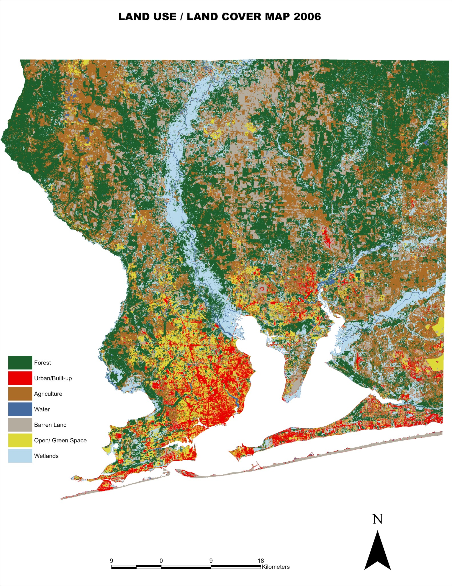
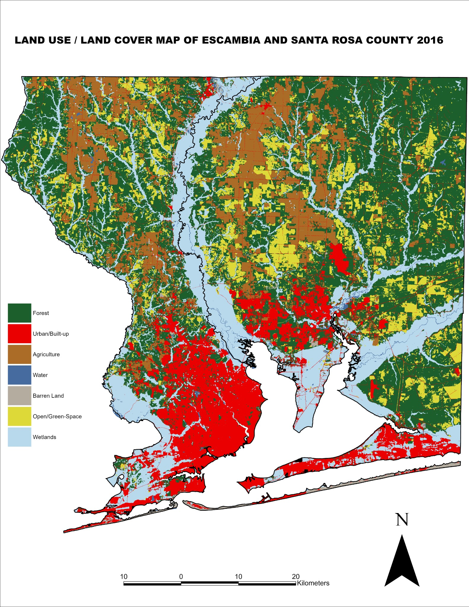
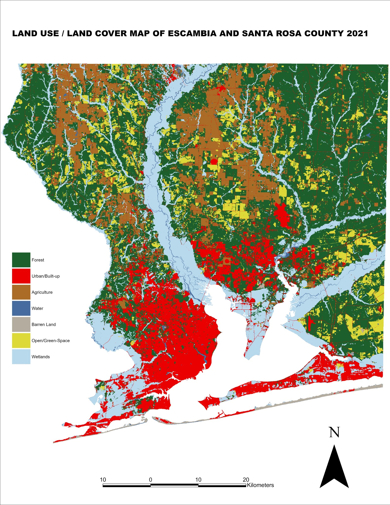
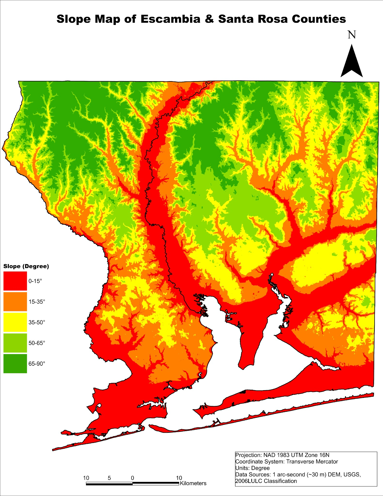
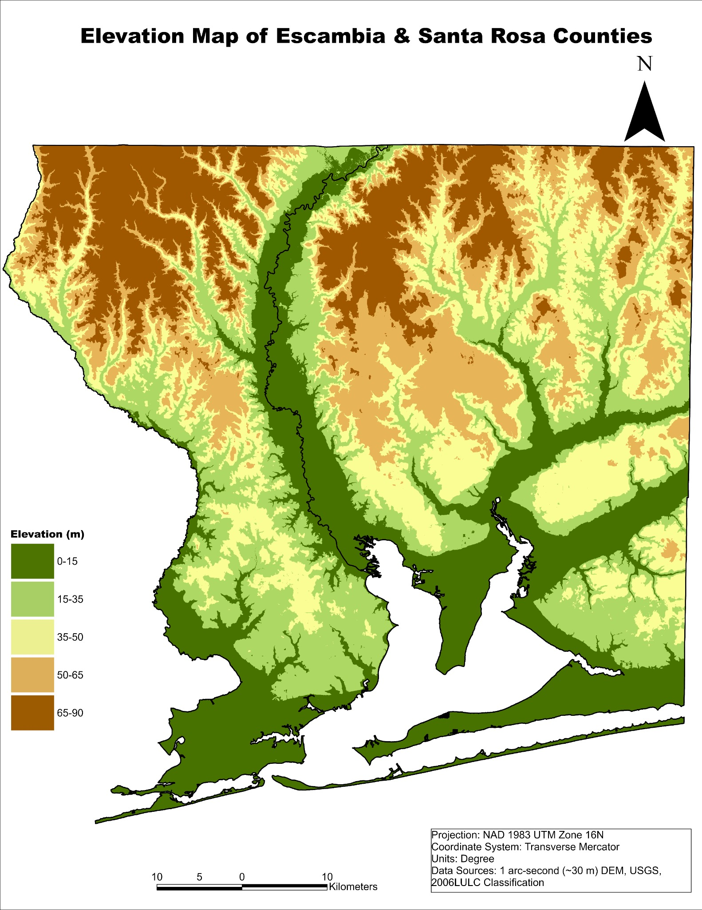
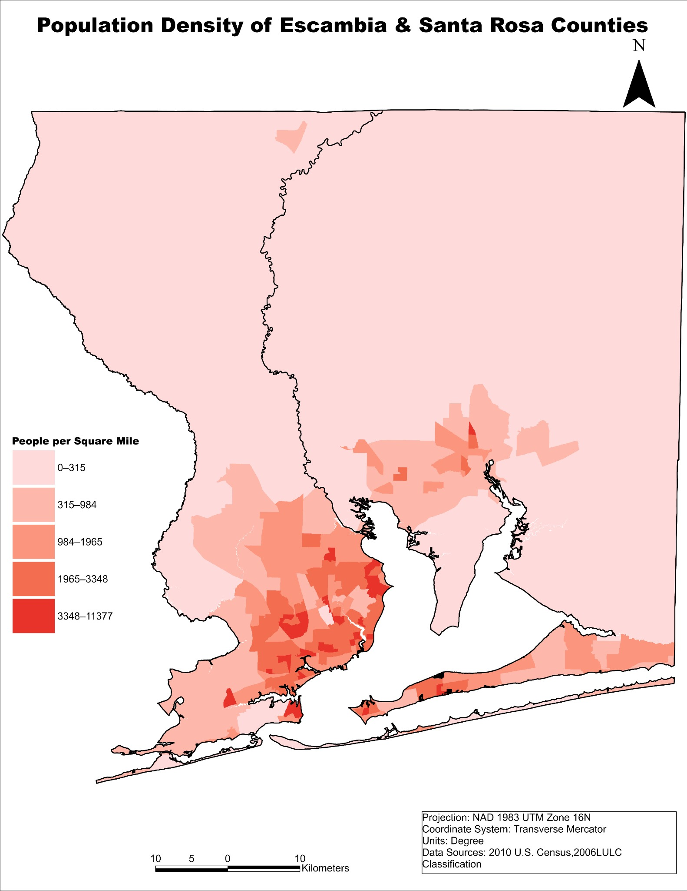
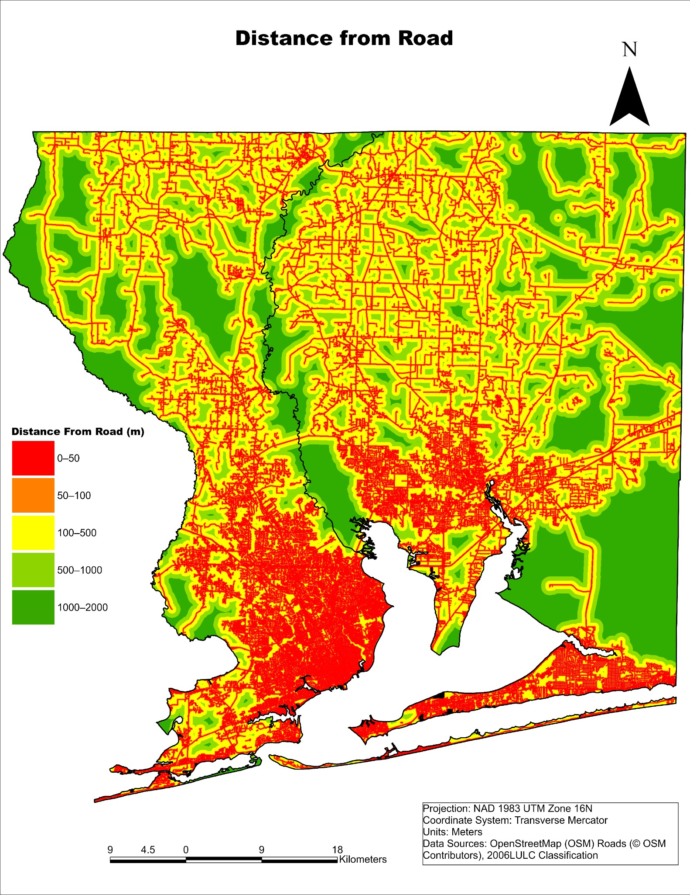
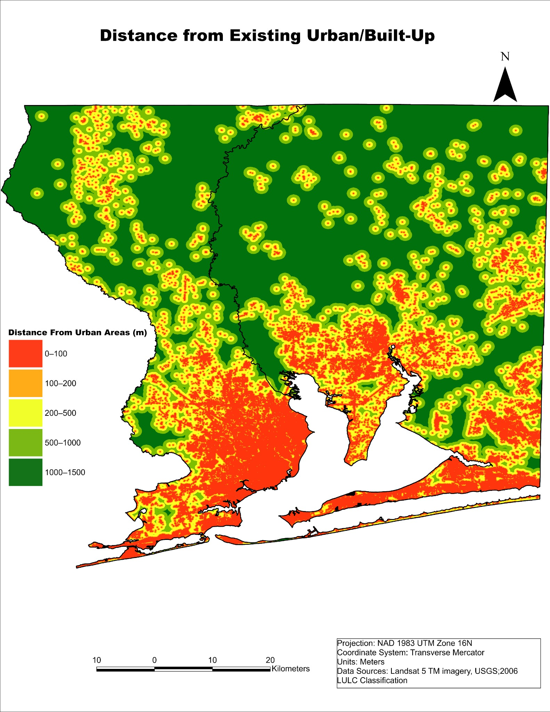
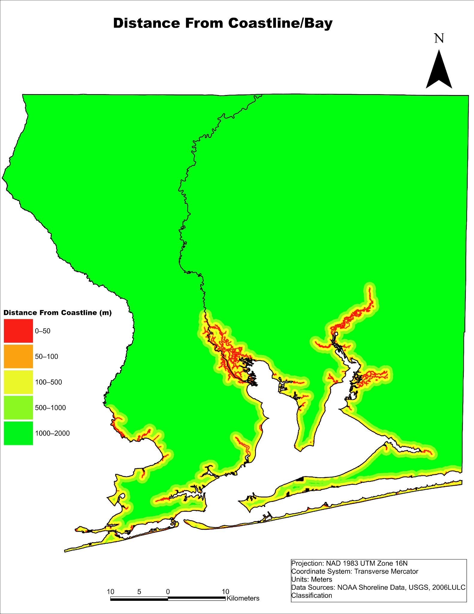

LULC Maps (2006 – 2016 – 2021)
These maps show the spatial patterns of land use / land cover for three time steps. Urban/built-up areas expand mainly around Pensacola, along major transportation corridors, and into suburban Santa Rosa County.

Figure 1. Land use / land cover map for 2006.

Figure 2. Land use / land cover map for 2016.

Figure 3. Land use / land cover map for 2021.
Biophysical Driver Maps
These layers represent the topographic and environmental conditions that influence land-use change. They are used as explanatory variables in the CA–Markov and MLP modelling framework.

Figure 4a. Slope map (degrees).

Figure 4b. Elevation map (meters).

Figure 4c. Population density map (people per square mile).
Proximity-Based Driver Maps
Proximity to roads, existing urban areas, and the coastline/bay strongly affects where new development is most likely to occur.

Figure 4d. Distance from major roads.

Figure 4e. Distance from existing urban/built-up areas (2006).

Figure 4f. Distance from coastline/bay.